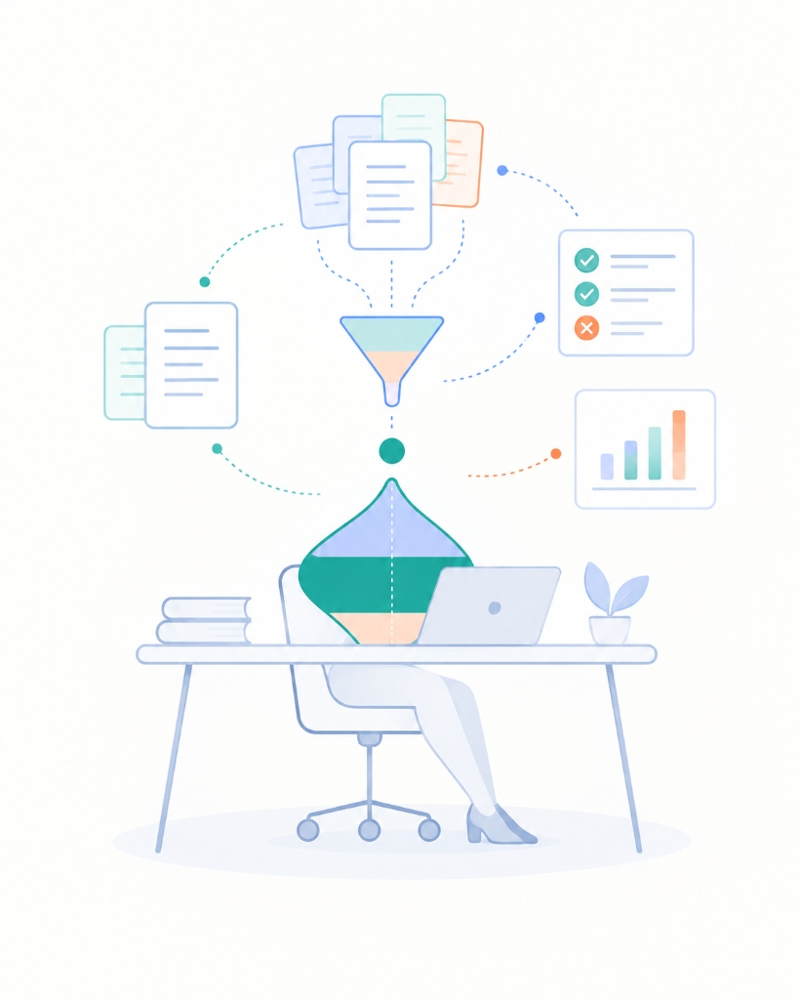

This walks through how the system solves fundamental friction points of large-scale literature synthesis: token wastage, black-box search results, and missing reproducible review protocols.
Objectives of the Project
Here’s the three foundational goals guiding the system architecture and workflow design.
Enable Deep and Wide Literature Reviews
Moves beyond title and abstract scanning. Enabling researchers to screen 100% of paper text in seconds.
Agentic capabilities allow researchers to compose complex search queries and exclusion criteria easily — going beyond the User Interface affordances of most common search indexes.
Support New Entrants to ISLS
The system is designed to support graduate students and cross-disciplinary newcomers in quickly getting a wide snapshot of their learning science interests.
The project also helps new writers get a sense of word budgets and commonly used section structures across ISLS published research.
Explore Limits of Agentic Protocols
This project tests how autonomous AI agents can execute rigorous qualitative and quantitative literature review protocols.
We explore the balance between generative output and deterministic code.
Advances Beyond Current Tools
Key technical advancements solving systemic gaps in official proceedings discovery.
ADVANCE 01
Full-Text and Canonical Section Search
Researchers can immediately find papers with target keywords across the full text. They can also identify where keyword matches are found across canonical paper section, offering clearer relevancy.
Hover to see gap bridged ↻
THE GAP BRIDGEDAdvance 01
What Standard Proceedings Discovery Misses
The standard search on isls.org (September 2026) only indexes paper titles and author abstracts.
Flip back to Advance
ADVANCE 02
Token-Frugal Agentic Querying at Scale
The system is engineered for autonomous AI agents to query and synthesize across a 4 Million token repository without hitting context window limits. With structured paper data agents can check for information sequentially without burning tokens.
Hover to see gap bridged ↻
THE GAP BRIDGEDAdvance 02
What Standard Large Context Prompts Miss
Prompting agents to handle large repositories often lead to errors and redundant data handling. The system includes skills defined for agents to access the repository through defined methods and to store data in defined formats - these support researchers with clear research protocols.
Flip back to Advance
Design Principles
Here are 4 core decisions taken to ensure an intuitive, researcher-first workflow.
01
Quick and Dirty Searches First
Give researchers an idea of what exists in the database within seconds. Locally run dipstick scanning filters 5,402 titles and abstracts in < 3 ms, providing immediate feedback before initiating expensive extraction burning tokens.
02
AI Supercharges Deterministic Methods
Never ask an LLM to generate truth that can be established through code. Agents amplify protocols by expanding search keywords, ranking results based on criteria and excluding papers with clearly reported reasons.
03
Logically Focus AI for Research
Only pass specific sections of a paper into context based on your protocol. For example, when an agent extracts participant demographics, inject only the Methodology section—never entire proceedings volumes.
04
Always Record Protocols Towards Replicability
Every literature review retains full audit provenance: exact search keywords, inclusion/exclusion rules, paper identifiers, and verbatim evidence quotes, ensuring scientific peer review and reproducibility.
Technical Walkthrough
Data Pipeline & Technical Architecture
Here’s a structural diagram illustrating how raw conference proceedings PDFs are transformed into structured data, accessed through 3 querying modes, and delivered to agentic platforms or displayed in your browser. The system is designed to be run locally and is comprised of Structured Data, an SQLite database + index, Python code, an HTML Web Viewer and Agent Skills.
Structural data flow, storage blocks, querying speeds, and interaction platforms
STAGE 01
1. Ingestion Pipeline
DSpace APIs are queried to pull metadata and paper PDFs (2016-2025)
Conference Proceedings PDFs are pulled where DSpace data is not available (2026)
Docling Document Engine and OCRmyPDF are used to parse PDF content accurately. PDF content must be stripped of header/footer text and cleaned for line breaks.
Pydantic is used to process the text extracted into structured section data stored as Markdown & JSON.
STAGE 02
2. Storage & Indexing Commons
Ground Truth Registry contains paper metadata including abstracts pulled from DSpace and extracted from conference proceedings.
SQLite FTS5 Index is a database index used to support speedy searches across full text sections.
Canonical Section Slices are also stored to allow agents to access specific section text.
Saved Review Stores are used to avoid redundant queries and searches. Once a query has been defined and a protocol has been generated - it is saved and can be re-used. These Saved Reviews also allow agents to focus on selected papers when answering follow-up questions.
STAGE 03
3. Three Querying Modes
⚡ Dipstick Review (< 3 ms) is designed to be the starting point of any review activity. It deterministically searches all titles and abstracts for keyword matches.
🔍 Expanded Scope (15–45 ms) uses the SQLite FTS5 Index to expand the keyword search to the full paper.
🤖 Agentic Review (1.5–4.0 s/paper) can be triggered through Claude or Antigravity.
STAGE 04
4. Delivery Platforms
🌐 Interactive Web Viewer offers a responsive, tabular view of review results - making it easier to scan through text.
⚡ Agentic Platforms like Antigravity IDE & Claude Desktop serve as the best way to conduct advanced searches translating research queries into clear protocols and executing them at scale.
Interactive Researcher Prompts
Researcher Use Cases & Ready Prompts
Short, crisp prompts tied directly to research intent. Designed to trigger built-in repository skills—saving time and avoiding over-prompting.
Context 01● Active
Exploring a New Topic
Prompt 1: Broad Landscape Sweep
Run a dipstick review on "generative AI conversational agents collaborative learning" across 2023–2026. Summarize the 10 most relevant papers with their theoretical framing, and save this as a new review.
Prompt 2: Theoretical Lineages
Identify the primary theoretical frameworks used in papers discussing "embodied learning multimodal analytics" from 2020 to 2026. Group by cognitive, sociocultural, and critical perspectives.
Prompt 3: Co-Authorship Clusters
Find the most frequently co-authored researcher clusters investigating "climate justice education" across ICLS and CSCL proceedings.
Context 02● Active
Systematic Literature Review

Prompt 1: Methodology Matrix Extraction
In my saved review on "Community Co-Design", extract the participatory framework, sample size, and participant demographics from only the Methodology sections. Format as a comparative matrix with quote evidence.
Prompt 2: Inclusion / Exclusion Screening
Screen papers in the "AI in CSCL" review against my criteria: include empirical studies evaluating student collaboration in K-12 classrooms; exclude conceptual papers, workshops, and higher-ed studies. Record exclusion reasons.
Prompt 3: Empirical Findings Synthesis
Extract the reported learning gains, statistical effect sizes, or qualitative shifts from the Results sections of papers in my "Dialogic Scaffolding" review.
Context 03● Active
First-Time Writing for ISLS
Prompt 1: Section Word Budget Benchmarking
Benchmark my draft ICLS Short Paper word counts against 2025–2026 accepted papers: Intro: 650w, Methods: 400w, Findings: 1,200w, Discussion: 550w. Flag any section exceeding normative distributions.
Prompt 2: Heading & Token Conventions
What are the most frequent section headings and token allocations for accepted Full Papers in CSCL 2024–2026 with a high Results & Findings emphasis?
Prompt 3: Practice Paper vs Poster Balance
Compare the normative length and structural balance between accepted ICLS Practice Papers and Posters. What is the standard ratio of Context to Practical Implication?
1-Click Local Deployment
Set Up Locally
Run the complete agentic literature review system on your machine with offline SQLite FTS5 search across all 5,402 papers. Compatible with Google Antigravity and Claude Desktop.
01
~9.5 MB Total(+9.5 MB archive)
Download Minimal Package
Clone the GitHub repository or download the lightweight minimal package containing core code, skills, and the 10-year golden dataset.
Open the folder in Google Antigravity (native skills auto-mount) or Claude Desktop (configured via CLAUDE.md project instructions).
AntigravityClaude Desktop
03
~668 MB Total(+112 MB db & cache)
Single Prompt to Set-Up
Paste this single prompt into the agent chat. It sets up the environment, builds the database, and starts the viewer in ~10 seconds.
Set up the virtual environment, install dependencies, rebuild the 10-year proceedings database and review caches, and launch the review viewer.
Citing This Resource
Academic Citation & Provenance
If you use the ISLS Research Repository, the SQLite search indices, or the agentic literature review tools in your scholarship, please cite this project.
APA 7th EditionWeb Application & Dataset Commons
Jhunja, R. (2026). 10 Years ISLS Proceedings Research Repository & Agentic Review System (2016–2026) [Web platform and dataset commons]. International Society of the Learning Sciences. https://isls-repository.org
@software{jhunja2026isls,
author = {Jhunja, Rohan},
title = {10 Years ISLS Proceedings Research Repository & Agentic Review System (2016--2026)},
year = {2026},
url = {https://isls-repository.org},
note = {Web platform, SQLite FTS5 search index, and dataset commons}
}